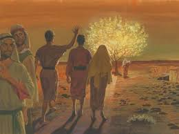
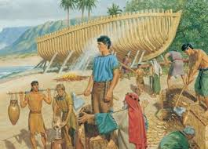
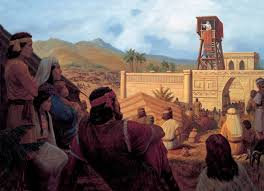
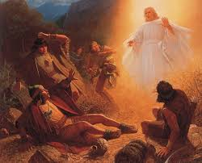
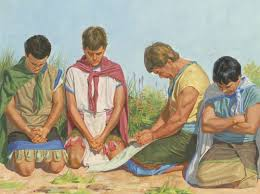
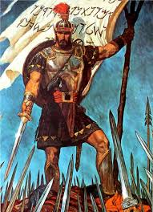
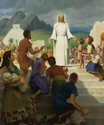
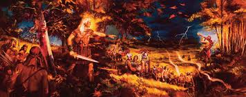

Lehi’s Vision and the Journey to the Promised Land
Summary: Lehi is called by God to lead his family from Jerusalem into the wilderness. He has a vision of the Tree of Life, symbolizing God’s love and the journey of discipleship.
Scripture References: 1 Nephi 2–8, 1 Nephi 11–15
Lessons: Obedience, guidance through revelation, the love of God, agency

Nephi Building the Ship
Summary: Despite ridicule from his brothers, Nephi builds a ship by following the Lord’s instructions, enabling their journey to the promised land.
Scripture References: 1 Nephi 17–18
Lessons: Faith, obedience, persistence, trust in God’s plan

King Benjamin’s Address
Summary: King Benjamin teaches his people about service, the Atonement, and the need to become spiritually reborn.
Scripture References: Mosiah 2–5
Lessons: Humility, service, discipleship, covenant making

Alma the Younger’s Conversion
Summary: Alma the Younger, once a persecutor of the church, is visited by an angel and experiences a mighty change of heart.
Scripture References: Mosiah 27, Alma 36
Lessons: Repentance, mercy, personal transformation, grace

The Mission of the Sons of Mosiah
Summary: The sons of Mosiah forsake the throne to preach the gospel to the Lamanites, facing trials but experiencing great success.
Scripture References: Alma 17–26
Lessons: Missionary work, love for others, perseverance, faith

Captain Moroni and the Title of Liberty
Summary: Captain Moroni defends the Nephite nation’s freedom by rallying the people with a banner symbolizing faith, family, and liberty.
Scripture References: Alma 46
Lessons: Courage, leadership, defending freedom, righteous cause

The Visit of Jesus Christ to the Americas
Summary: After His resurrection, Jesus Christ appears to the people in the Americas, teaching, healing, and establishing His doctrine.
Scripture References: 3 Nephi 11–28
Lessons: Christ’s divinity, unity, faith, the importance of covenants

The Destruction of the Nephites
Summary: After rejecting the Lord’s commandments, the Nephite civilization is destroyed due to pride and wickedness.
Scripture References: Mormon 4–6
Lessons: Pride, consequences of sin, warnings from prophets